Pembukaan
Sevenation adalah Nama angkatan Siswa santri angkatan tujuh di SMA Ali Maksum, yang terdiri dari 93 orang,
43 Laki-laki dan 40 Perempuan yang berasal dari berbagai daerah. Sebagai tambahan informasi, sekolah kami berbasis pondok pesantren yang mana setiap siswa santri diwajibkan untuk tinggal si asrama.
Jadi kebanyakan kisah kejadian yang akan saya ceritakan sebagian akan terjadi di asrama dan di sekolah
Asal Usul
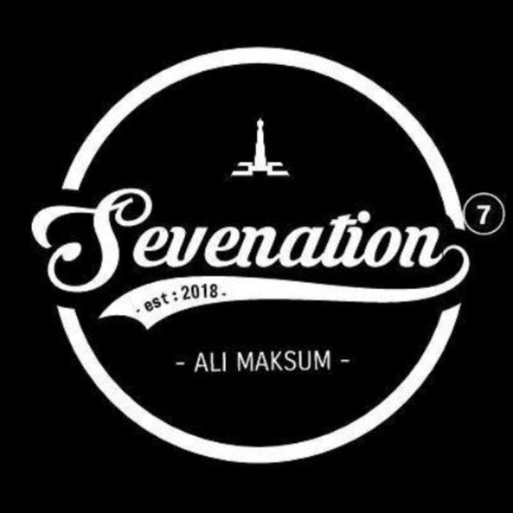
Terciptanya nama "Sevenation" merupakan hasil dari rapat angkatan yang diadakan berkali-kali, dan melalui diskusi yang panjang.
Beberapa usulan nama muncul pada saat itu, diantaranya :
- 7th Generation
- Seger (Seven Generation)
- Pitujuh
- Sevenation
Namun setelah melalui perdebatan yang panjang dan tiada akhir, kami pun memutuskan untuk mengadakan voting dan terpilihlah "Sevenation" sebagai nama Angkatan.
Sevenation merupakan kepanjangan dari "Seven" dan "Nation". Seven yang berarti tujuh, Nation berarti Bangsa atau Negara yang mana jika digabungkan akan memiliki arti "Bangsa Ketujuh"
Perjalanan
Berbagai aktivitas dan kenangan suka dan duka selama bersama menjadi cerita tersendiri bagi saya, mulai dari permasalahan internal
sampai masalah antar angkatan yang setelah ini akan saya ceritakan secara singkat
Kelas 10
Pada saat MOS (Masa Orientasi Sekolah) yaitu diawal kelas 10, kami semua masih belum mengenal satu sama lain hingga lama-kelamaan mulai mengenal dan sudah seperti tidak punya rasa malu antar sesama (aokawokwaowaok)
Pada pertengahan semester sekolah mengadakan Outdoor class, yaitu aktivitas belajar di luar sekolah. Biasanya kami mengunjungi universitas-universitas, tempat wisata, museum, dsb. Lalu pada akhir tahun kami mengikuti
kegiatan Outbond di daerah Turi. Hingga pada akhirnya tibalah masa kenaikan menuju kelas 11.
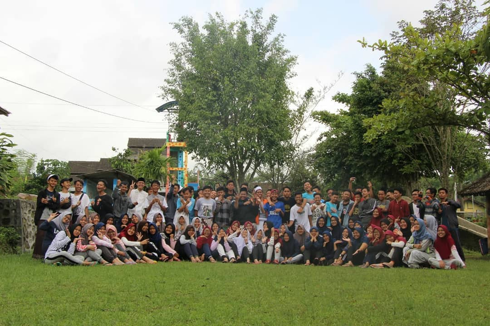
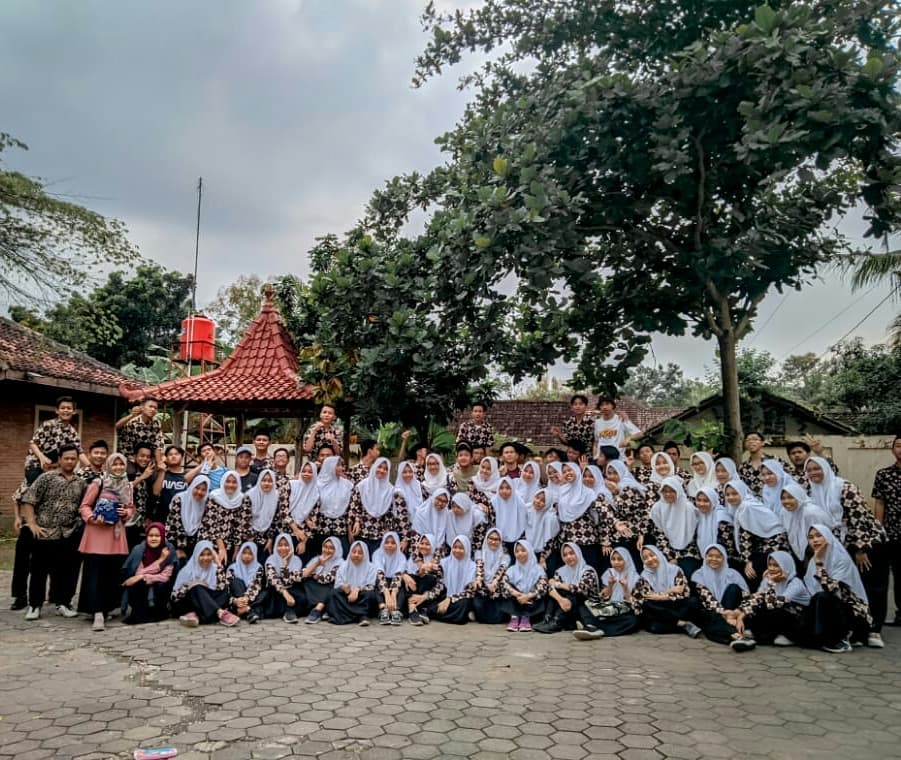
Kelas 11
Dikelas 11, kami melakukan kegiatan seperti biasa, namun yang pada umumnya seperti sekolah lain melaksanakan Study Tour, kami tidak. Di pertengahan kelas 11, pandemi covid menyerang. Seluruh siswa santri dipulangkan,
dan kami semua melaksanakan kegiatan belajar secara daring.
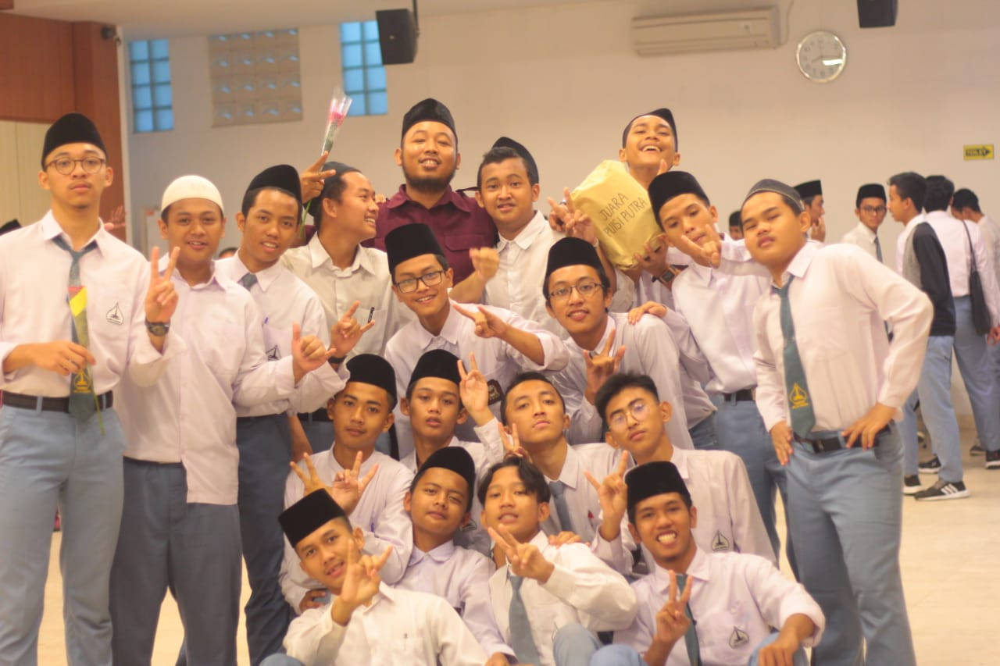
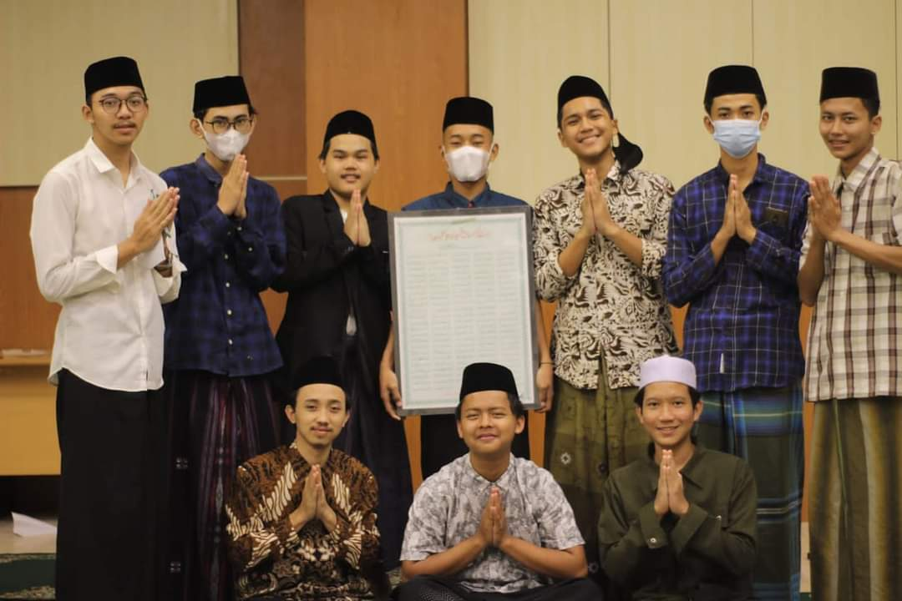
Kelas 12
Tidak ada yang menarik di kelas 12, hingga akhirnya tibalah waktu Purna Siswa. Saat itu hampir semua anggota berangkat ke asrama untuk mengikuti purna siswa. Acara purna siswa ini dimulai dengan Khataman santri tahfidh,
kemudian dilanjutkan dengan proses wisuda.
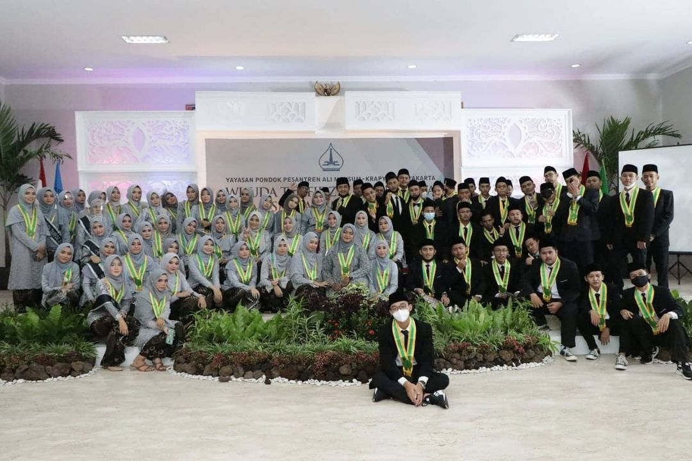
Alumni
Setelah lulus, kami beberapa kali sering mengadakan acara seperti Buka bersama, bakar bakar, Futsal, Ngangkring, Ziaroh, dsb
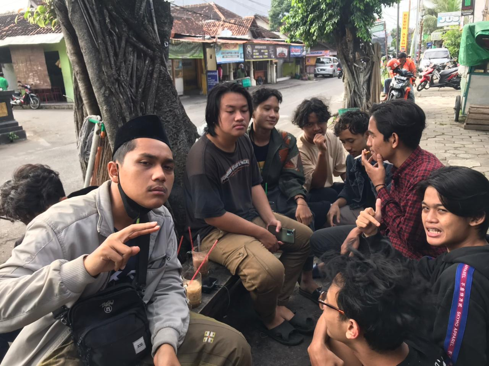
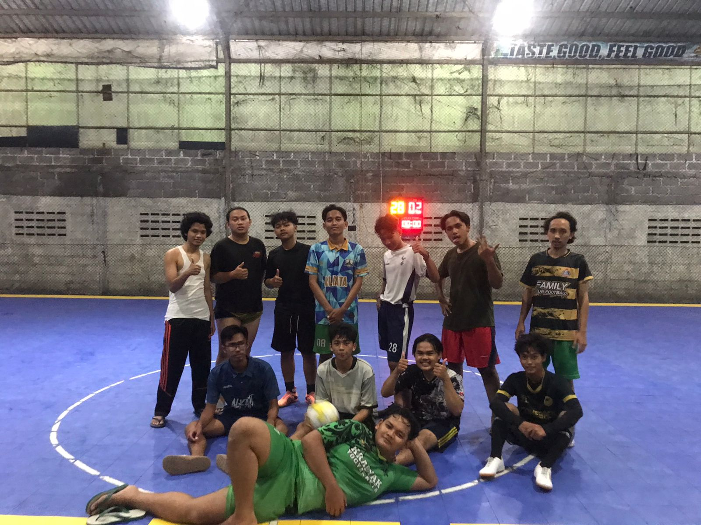
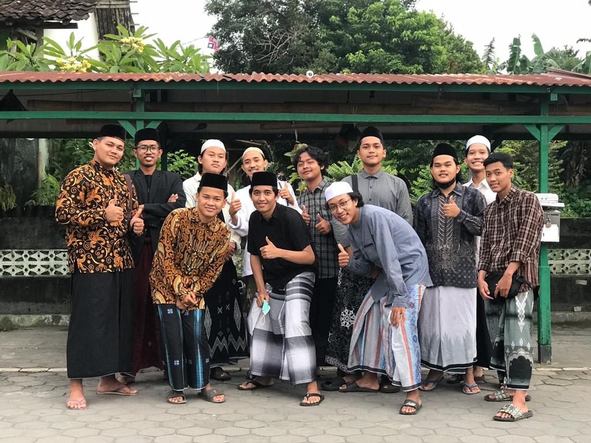
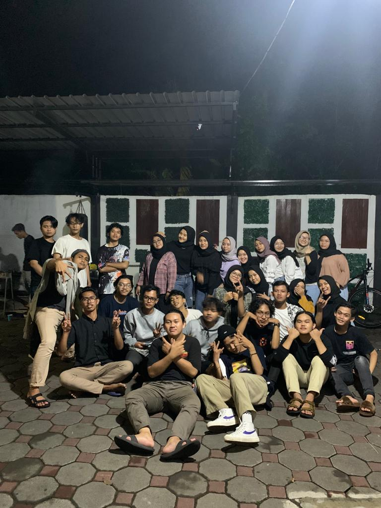
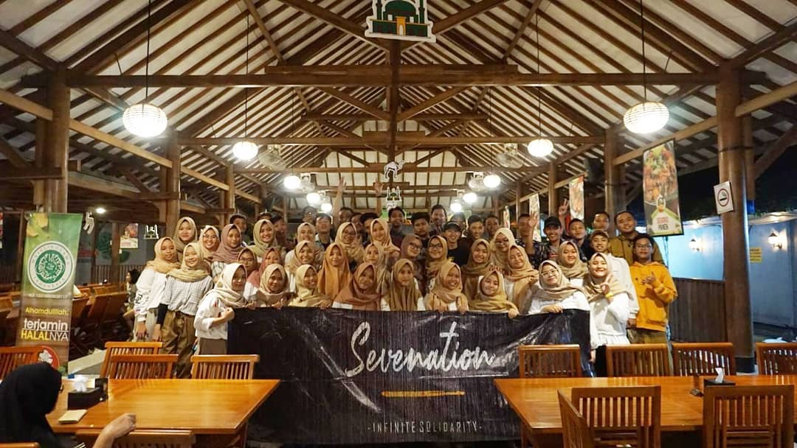